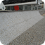
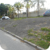

Picos
Favoritos
Ver todos-

Wallride da FGP
Matheus Favaretto
-

Borda de Valores
Matheus Favaretto
-

Wallride do Rebouças
Matheus Favaretto
-
Segundo setor da Praça Mauá
Matheus Favaretto
-
Borda de Valores
Matheus Favaretto
-
Wallride do Rebouças
Matheus Favaretto
Mais visitados

Bruno Lopes
Gap do Itaú da Voluntários da Prátia
53 visualizações

Luiza Sampaio
Gap com mureta da Voluntários
53 visualizações

André Soares
Rampa da entrada do túnel Rebouças
53 visualizações

Júlia Fonseca
Wallride de pedra portuguesa FGP
53 visualizações